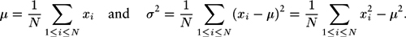
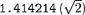

|
Operations are associated with types, not the other way around. When we perform an operation, we need to ensure that its operands and result are of the correct type. Neglecting this responsibility is a common programming error. In some situations, C++ performs implicit type conversions; in other situations, we use casts, or explicit type conversions. For example, if x and N are integers, the expression
includes both types of conversion: the (float) is a cast that converts the value of x to floating point; then an implicit conversion is performed for N to make both arguments of the divide operator floating point, according to C++'s rules for implicit type conversion.
Many of the operations associated with standard data types (for example, the arithmetic operations) are built into the C++ language. Other operations are found in the form of functions that are defined in standard function libraries; still others take form in the C++ functions that we define in our programs (see Program 3.1). That is, the concept of a data type is relevant not just to integer, floating point, and character built-in types. We often define our own data types, as an effective way of organizing our software. When we define a simple function in C++, we are effectively creating a new data type, with the operation implemented by that function added to the operations defined for the types of data represented by its arguments. Indeed, in a sense, each C++ program is a data type—a list of sets of values (built-in or other types) and associated operations (functions). This point of view is perhaps too broad to be useful, but we shall see that narrowing our focus to understand our programs in terms of data types is valuable.
One goal that we have when writing programs is to organize them such that they apply to as broad a variety of situations as possible. The reason for adopting such a goal is that it might put us in the position of being able to reuse an old program to solve a new problem, perhaps completely unrelated to the problem that the program was originally intended to solve. First, by taking care to understand and to specify precisely which operations a program uses, we can easily extend it to any type of data for which we can support those operations. Second, by taking care to understand and to specify precisely what a program does, we can add the abstract operation that it performs to the operations at our disposal in solving new problems.
Program 3.1. Function definition|
The mechanism that we use in C++ to implement new operations on data is the function definition, illustrated here.
All functions have a list of arguments and possibly a return value. The function lg here has one argument and a return value, each of type int. The function main here takes no arguments and returns an int (by default, the value 0 which indicates successful completion).
We declare the function by giving its name and the types of its return values. The first line of the file references a library file that contains declarations of cout, << and endl. The second line of code is a declaration for lg. The declaration is optional if the function is defined (see next paragraph) before it is used. The declaration provides the information necessary for other functions to call or invoke the function, using arguments of the proper type. The calling function can use the function in an expression, in the same way as it uses variables of the return-value type.
We define functions with C++ code. All C++ programs include a definition of the function main, and this code also defines lg. In a function definition, we give names to the arguments (which we refer to as parameters) and express the computation in terms of those names, as if they were local variables. When the function is invoked, these variables are initialized with the values of the arguments and the function code is executed. The return statement is the instruction to end execution of the function and provide the return value to the calling function. In principle, the calling function is not to be otherwise affected, though we shall see many exceptions to this principle.
The separation of definition and declaration provides flexibility in organizing programs. For example, both could be in separate files (see text). Or, in a simple program like this one, we could put the definition of lg before the definition of main and omit its declaration.
#include <iostream.h>
int lg(int);
int main()
{
for (int N = 1000; N <= 1000000000; N *= 10)
cout << lg(N) << " " << N << endl;
}
int lg(int N)
{
for (int i = 0; N > 0; i++, N /= 2) ;
return i;
}
|
Program 3.2 implements a simple computation on numbers using a simple data type defined with a typedef operation and a function (which itself is implemented with a library function). The main function refers to the data type, not the built-in type of the number. By not specifying the type of the numbers that the program processes, we extend its potential utility. For example, this practice is likely to extend the useful lifetime of a program. When some new circumstance (a new application, or perhaps a new compiler or computer), presents us with a new type of number with which we would like to work, we can update our program just by changing the data type.
This example does not represent a fully general solution to the problem of developing a type-independent program for computing averages and standard deviations—nor is it intended to do so. For example, the program depends on converting a number of type Number to a float to be included in the running average and variance. As written, the program depends on the cast to float that is part of the int built-in type; in general, we could explicitly define such a cast for any type of Number.
If we were to try to do operations other than arithmetic operations, we would soon find the need to add more operations to the data type. For example, we might want to print the numbers. Whenever we strive to develop a data type based on identifying the operations of importance in a program, we need to strike a balance between the level of generality and the ease of implementation and use.
It is worthwhile to consider in detail how we might change the data type to make Program 3.2 work with other types of numbers, say floats, rather than with ints. There are a number of different mechanisms available in C++ that we could use to take advantage of the fact that we have localized references to the type of the data. For such a small program, the simplest is to make a copy of the file, then to change the typedef to typedef float Number and the body of the procedure randNum to return 1.0*rand()/RAND_MAX; (which will return random floating-point numbers between 0 and 1). Even for such a small program, this approach is inconvenient because it leaves us with two copies of the main program, and we will have to make sure that any later changes in that program are reflected in both copies. In C++, an alternative approach is to put the typedef and randNum into a separate header file—called, say, Number.h—replacing them with the directive
in the code in Program 3.2. Then, we can make a second header file with different typedef and randNum, and, by renaming one of these files or the other Number.h, use the main program in Program 3.2 with either, without modifying it at all.
Program 3.2. Types of numbers|
This program computes the average μ and standard deviation σ of a sequence x1, x2, . . . ,xN of integers generated by the library procedure rand, following the mathematical definitions

Note that a direct implementation from the definition of σ2 requires one pass to compute the average and another to compute the sums of the squares of the differences between the members of the sequence and the average, but rearranging the formula makes it possible for us to compute σ2 in one pass through the data.
We use the typedef declaration to localize reference to the fact that the type of the data is int. For example, we could keep the typedef and the function randNum in a separate file (referenced by an include directive), and then we could use this program to test random numbers of a different type by changing that file (see text).
Whatever the type of the data, the program uses ints for indices and floats to compute the average and standard deviation, and will be effective only if conversions from the data type to float are defined.
#include <iostream.h>
#include <stdlib.h>
#include <math.h>
typedef int Number;
Number randNum()
{ return rand(); }
int main(int argc, char *argv[])
{ int N = atoi(argv[1]);
float m1 = 0.0, m2 = 0.0;
for (int i = 0; i < N; i++)
{
Number x = randNum();
m1 += ((float) x)/N;
m2 += ((float) x*x)/N;
}
cout << " Avg.: " << m1 << endl;
cout << "Std. dev.: " << sqrt(m2-m1*m1) << endl;
}
|
A third alternative, which is a recommended software engineering practice that is widely used by programmers in C, C++ and other languages, is to split the program into three files:
An interface, which defines the data structure and declares the functions to be used to manipulate the data structure An implementation of the functions declared in the interface A client program that uses the functions declared in the interface to work at a higher level of abstraction
With this arrangement, we can use the main program in Program 3.2 with integers or floats, or extend it to work with other types, just by compiling it together with the specific code for the type of interest. In the paragraphs that follow, we shall consider the precise changes needed for this example.
We think of the interface as a definition of the data type. It is a contract between the client program and the implementation program. The client agrees to access the data only through the functions defined in the interface, and the implementation agrees to deliver the promised functions.
For the example in Program 3.2, the interface would consist of the declarations
typedef int Number;
Number randNum();
The first line specifies the type of the data to be processed, and the second specifies an operation associated with the type. We might keep this code, for example, in a file named Number.h, where it can be independently referenced by both clients and implementations.
The implementation of the interface in Number.h is an implementation of the randNum function, which might consist of the code
#include <stdlib.h>
#include "Number.h"
Number randNum()
{ return rand(); }
The first line refers to the system-supplied interface that describes the rand() function; the second line refers to the interface that we are implementing (we include it as a check that the function we are implementing is the same type as the one that we declared), and the final two lines give the code for the function. This code might be kept, for example, in a file named int.c. The actual code for the rand function is kept in the standard C++ run-time library.
A client program corresponding to Program 3.2 would begin with the include directives for interfaces that declare the functions that it uses, as follows:
#include <iostream.h>
#include <math.h>
#include "Number.h"
The function main from Program 3.2 then can follow these three lines. This code might be kept, for example, in a file named avg.c.
Compiled together, the programs avg.c and int.c described in the previous paragraphs have the same functionality as Program 3.2, but they represent a more flexible implementation both because the code associated with the data type is encapsulated and can be used by other client programs and because avg.c can be used with other data types without being changed. We are still assuming that whatever type we use for Number converts to float; C++ allows us to define that conversion, as well as to define what we want built-in operators such as += and << to mean as part of our new data type. Reusing function names or operators in different data types is called overloading.
There are many other ways to support data types besides the client–interface–implementation scenario just described. The concept transcends any particular programming language or implementation approach. Indeed, since file names are not part of the language, you might have to modify the simple approach suggested above to get it to work in your C++ environment (rules on inclusion vary, systems have differing conventions or rules on what can be in header files, and some systems require specific filename extensions, such as .C or .cxx, for program files). One of the most important features in C++ is the concept of a class, which provides us with a convenient way to define and implement data types. Although we will stick with the simple approach just described for the remainder of this chapter, we shall be using classes almost exclusively throughout the rest of the book. Chapter 4 is devoted to the topic of using classes to create the basic data types that are of importance in algorithm design, and covers the relationship between C++ classes and the client–interface–implementation design paradigm in detail.
The primary reason for the existence of these mechanisms is the support that they provide for teams of programmers facing the tasks of creating and maintaining huge applications systems. However, an understanding of this topic is important to us because we exploit the mechanisms throughout the book to create natural ways to substitute improved implementations of algorithms and data structures for old ones, and therefore to compare different algorithms for the same applications problem.
We often want to build data structures that allow us to handle collections of data. The data structures may be huge, or they may be used extensively, so we are interested in identifying the important operations that we will perform on the data and in knowing how to implement those operations efficiently. Doing these tasks is taking the first steps in the process of incrementally building lower-level abstractions into higher-level ones; that process allows us to conveniently develop ever more powerful programs. The simplest mechanisms for grouping data in an organized way in C++ are arrays, which we consider in Section 3.2, and structures, which we consider next.
Structures are aggregate types that we use to define collections of data such that we can manipulate an entire collection as a unit, but can still refer to individual components of a given datum by name. In C++, we can use a structure to define a new type of data, and can define operations on that data. That is, we can manipulate the aggregate data in much the same way that we manipulate data defined by built-in types such as int or float. We can name variables, and can pass those variables as arguments to functions, and can do many other things, as we shall see.
Program 3.3. Point data type interface|
This interface defines a data type consisting of the set of values "pairs of floating-point numbers" and the operation "compute the distance between two points."
struct point { float x; float y; };
float distance(point, point);
|
For example, when processing geometric data we might want to work with the abstract notion of points in the plane. Accordingly, we can write
struct point { float x; float y; };
to indicate that we will use the name point to refer to pairs of floating-point numbers. For example, the statement
declares two variables of this type. We can refer to individual members of a structure by name. For example, the statements
a.x = 1.0; a.y = 1.0; b.x = 4.0; b.y = 5.0;
set a to represent the point (1,1) and b to represent the point (4,5).
We can also pass structures as arguments to functions. For example, the code
float distance(point a, point b)
{ float dx = a.x - b.x, dy = a.y - b.y;
return sqrt(dx*dx + dy*dy);
}
defines a function that computes the distance between two points in the plane. This example illustrates the natural way in which structures allow us to aggregate our data in typical applications.
Program 3.3 is an interface that embodies our definition of a data type for points in the plane: it uses a structure to represent the points, and includes an operation to compute the distance between two points. Program 3.4 is a function that implements the operation. We use interface-implementation arrangements like this to define data types whenever possible, because they encapsulate the definition (in the interface) and the implementation in a clear and direct manner. We make use of the data type in a client program by including the interface and by compiling the implementation with the client program (or by using appropriate separate-compilation facilities). The implementation Program 3.4 includes the interface of Program 3.3 to ensure that its function definition matches what the client expects. The idea is to make sure that client programs can use points without having to make any assumption about how they are represented. In Chapter 4, we shall see how to carry this separation between client and implementation one step further.
The point structure example just given is a simple one that comprises two items of the same type. In general, structures can mix different types of data. We shall be working extensively with such structures throughout the rest of this chapter.
Structures allow us to aggregate data; in C++, we can, in addition, associate with the data the operations that we want to perform on it in using the class mechanism. We shall consider the details of defining classes in Chapter 4, along with many examples. With an appropriate class, we could even use a program such as Program 3.2 to process items of type point, by defining what we want the appropriate arithmetic and type conversion operations to mean for points. This ability to use previously defined high-level abstract operations, even for newly defined types, is one of the essential and distinctive features of C++ programming. It is based on our ability to directly define our own data types within the language, not just by associating data with struct, but also by precisely defining the operations on the data (and the data structures and algorithms that support them) with classes. Classes form the basis for our implementations throughout the book, but before considering the definition and use of classes in detail (in Chapter 4), we need to consider a number of lower-level mechanisms for manipulating and associating data.
Beyond giving us the specific basic types int, float, and char, and the ability to build them into compound types with struct, C++ provides us with the ability to manipulate our data indirectly. A pointer is a reference to an object in memory (usually implemented as a machine address). We declare a variable a to be a pointer to (for example) an integer by writing int *a, and we can refer to the integer itself as *a. We can declare pointers to any type of data. The unary operator & gives the machine address of an object, and is useful for initializing pointers. For example, *&a is the same as a.
Program 3.4. Point data type implementation|
This implementation provides the definition for the distance function for points that is declared in Program 3.3. It makes use of a library function to compute the square root.
#include <math.h>
#include "Point.h"
float distance(point a, point b)
{ float dx = a.x - b.x, dy = a.y - b.y;
return sqrt(dx*dx + dy*dy);
}
|
Referring to an object indirectly via a pointer is often more convenient than referring directly to the object, and can also be more efficient, particularly for large objects. We will see many examples of this advantage in Sections 3.3 through 3.7. Even more important, as we shall see, we can use pointers to structure our data in ways that support efficient algorithms for processing the data. Pointers are the basis for many data structures and algorithms.
A simple and important example of the use of pointers arises when we consider the definition of a function that is to return multiple values. For example, the following function (using the functions sqrt and atan2 from the standard library) converts from Cartesian to polar coordinates:
polar(float x, float y, float *r, float *theta)
{ *r = sqrt(x*x + y*y); *theta = atan2(y, x); }
The arguments to this function are passed by value—if the function assigns a new value to an argument variable, that assignment is local to the function and is not seen by the calling function. This function therefore cannot change the pointers to the floating-point numbers r and theta, but it can change the values of the numbers, by indirect reference. For example, if a calling function has a declaration float a, b, the function call
will result in a being set to  and b being set to 0.785398 (π/4). The & operator allows us to pass the addresses of a and b to the function, which treats those arguments as pointers.
In C++, we can achieve the same effect using reference parameters, as follows:
polar(float x, float y, float& r, float& theta)
{ r = sqrt(x*x + y*y); theta = atan2(y, x); }
The notation float& means "reference to a float". We may think of references as built-in pointers that are automatically followed each time they are used. For example, when we refer to theta in this function, we are referring to whatever float was used in the second argument in the calling function. If, as in the example in the previous paragraph, a calling function has a declaration float a, b, the function call polar(1.0, 1.0, a, b) will result in a being set to 1.414214 and b being set to 0.785398.
So far, we have primarily talked about defining individual pieces of information for our programs to process. In many instances, we are interested in working with potentially huge collections of data, and we now turn to basic methods for doing so. In general, we use the term data structure to refer to a mechanism for organizing our information to provide convenient and efficient mechanisms for accessing and manipulating it. Many important data structures are based on one or both of the two elementary approaches that we shall consider in this chapter. We may use an array, where we organize objects in a fixed sequential fashion that is more suitable for access than for manipulation; or a list, where we organize objects in a logical sequential fashion that is more suitable for manipulation than for access.
|